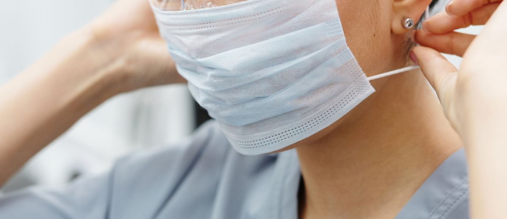

Qué sube y qué baja el precio de tu clínica dental

Hay una conversación que casi ningún dentista tiene con su clínica: ¿cuánto valdría esto si mañana tuvieras que venderlo?
No porque vayas a vender. Sino porque la respuesta te dice todo lo que necesitas saber sobre cómo estás gestionando.
El mercado de compraventa dental en España mueve más de 400 millones de euros al año. Entre 800 y 1.200 clínicas cambian de manos cada ejercicio. Y el precio no es arbitrario: hay factores concretos, medibles, que mueven el múltiplo de valoración hacia arriba o hacia abajo. El informe de Ascensium —basado en más de 500 valoraciones reales— los tiene documentados.
Lo que sube: la especialización tiene número
Una clínica que ha desarrollado implantología u ortodoncia como área diferencial vale más en el mercado. No como intuición de comprador, sino como dato. La especialización en estas disciplinas suma entre 0,3 y 0,5 puntos al múltiplo de EBITDA en la valoración.
En términos concretos: si tu clínica genera 150.000 euros de beneficio al año, eso son entre 45.000 y 75.000 euros más de precio solo por tener una especialidad arraigada.
¿Por qué lo paga el comprador? Porque no solo compra la facturación de hoy. Compra la posición de mercado, el tipo de paciente que esa especialidad atrae y la estabilidad futura del flujo. Un paciente de implantes es más fiel y más rentable que uno de urgencias. Una clínica con ortodoncia consolidada no depende del paciente que entra por dolor: depende del que elige.
- Implantología: tratamiento de alto valor, alta fidelización, poco sensible al precio una vez el paciente confía.
- Ortodoncia: ciclos largos, relación continua, referidos frecuentes. Genera agenda estructurada, no dependiente de la captación constante.
- Periodoncia: seguimiento recurrente, base de pacientes estable. Menos espectacular como argumento de venta, pero muy sólida como flujo predecible.
Lo que baja: la dependencia del titular
Aquí está el dato incómodo.
Cuando el titular genera más del 70% de la facturación de la clínica —porque los pacientes van a él, confían en él, lo piden a él— la valoración baja hasta 0,8 puntos de EBITDA.
Misma facturación. Mismo beneficio anual. Pero el comprador descuenta lo que se va a ir con ese dentista el día que se marche.
El riesgo más caro del sector dental no está en la competencia. Está en que la clínica y su titular son la misma persona.
No es una opinión: es el precio que pone el mercado, operación tras operación. Cuando el comprador mira una clínica personalista, hace el mismo cálculo: ¿qué queda aquí si el dueño no está? Y si la respuesta es "poco", paga poco.
El diagnóstico que puedes hacer esta semana
Tres preguntas que vale la pena responder con honestidad:
- ¿Qué porcentaje de tu facturación viene de tratamientos que solo haces tú? Si supera el 60-70%, tienes un activo valioso y un riesgo también valioso.
- ¿Tienes un área donde tu clínica destaca claramente? Implantes documentados, casos de ortodoncia con seguimiento, periodoncia con protocolo. Una especialización real, no un servicio de catálogo.
- ¿Podría alguien gestionar tu clínica durante tres meses sin que todo se cayera? No perfectamente. Sin que todo se cayera.
Por qué importa aunque no vayas a vender
La clínica que depende menos de su titular también funciona mejor en el día a día. Cuando hay bajas, vacaciones, o simplemente necesitas alejarte una semana. La resiliencia operativa y el valor de mercado miden exactamente lo mismo desde ángulos distintos.
El mercado de compraventa dental es, en ese sentido, el espejo más honesto que existe. No tiene prejuicios ni sentimentalismos: mira los números, mira la estructura, y dice lo que vale.
Y lo que cobra al que no ha construido un sistema —sino un empleo muy bien pagado— es un descuento de hasta el 80% sobre lo que podría ganar.
Esa diferencia no se recupera el día de la venta. Se construye o se destruye cada lunes por la mañana.
Fuente: Ascensium, Informe de Mercado 2026: Compraventa de Clínicas Dentales en España — basado en más de 500 valoraciones reales.